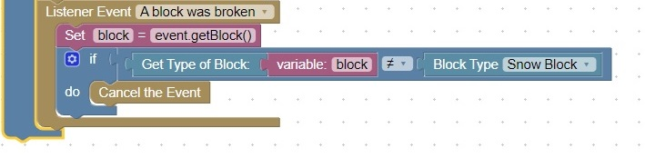

Protect All Blocks except Snow
The protect a block from destruction, use the block break event, and check the type of the block
When the blocktype is one that you want to protect, cancel the event
In our case, we only want to allow snow blocks to be broken, so we will use the logic:
